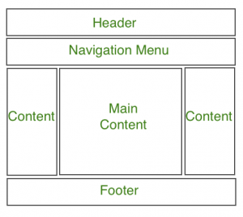

CSS Nedir?
CSS, web sayfalarının stilini belirlemek için kullanılan bir dilidir. Renkler, fontlar, kenarlıklar ve arka planlar gibi görsel özellikleri ayarlar.

Daha fazla bilgi için W3Schools CSS Kılavuzu ve MDN CSS Dokümantasyonu'na göz atabilirsiniz.
CSS ile Stilleme
Renkler ve fontlar, web sitenizin görünümünü belirler. Kenarlıklar ve arka planlar ise ögelerin öne çıkmasını sağlar.
- Renkler: Web sitenizin renk paletini ayarlayın.
- Fontlar: Yazı tiplerinizi belirleyin.
- Kenarlıklar ve Arka Planlar: Ögelerinizin görünümünü özelleştirin.
CSS stil kuralları hakkında daha fazla bilgi için CSS-Tricks ve Smashing Magazine'a bakabilirsiniz.
Düzen ve Yerleşim
Flexbox ve Grid, düzen ve yerleşim için güçlü araçlardır. Responsive tasarım için medya sorguları kullanın.
- Flexbox: Esnek yerleşimler için kullanılır.
- Grid: Karmaşık düzenler oluşturur.
- Medya Sorguları: Farklı ekran boyutları için uyum sağlar.

Flexbox ve Grid hakkında daha fazla bilgi için CSS-Tricks Flexbox Rehberi ve CSS-Tricks Grid Rehberi'ni ziyaret edebilirsiniz.